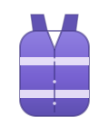

Awareness
Feiern, auf das ihr euch verlassen könnt.
Awareness ist bei uns kein Aushang, sondern gelebte Praxis: eigenes Team, eigene Ersthelfer*innen, Free Water — auf jeder einzelnen Mission. Safer Space, nicht Safe Space. Aber wir tun alles dafür.
So erkennst du uns
Lila Weste, offenes Ohr

Unser Awareness-Team trägt lila Westen — ansprechbar die ganze Nacht, auf jedem Event. Ein eigenes Symbol (z. B. eine kleine Rakete) ist angedacht, aber noch nicht final.
Wobei du zu uns kommen kannst
Es gibt keine „zu kleine“ Sache.
- Jemand tanzt dich immer wieder an, obwohl du weggehst
- Ein Spruch war drüber
- Dir ist schwindelig oder du fühlst dich komisch
- Du findest deine Leute nicht mehr
- Du willst einfach 10 Minuten Ruhe
Ohne Fragen, ohne Scham, ohne Drama.
Unsere Grundsätze
Vier Regeln für uns
Daran hält sich das Awareness-Team — bei jeder Meldung, jedes Mal.
Beim Tanzen, Flirten, Anfassen: Hol dir ein Okay, bevor du loslegst.
Wo für dich ein Übergriff anfängt, entscheidest du. Niemand sonst.
Wenn du zu uns kommst, diskutieren wir nicht deine Wahrnehmung.
Wir besprechen Vorfälle nur anonymisiert im Team.
Wer Grenzen verletzt, bekommt höchstens eine Ansage — danach: Rauswurf, ohne Diskussion und ohne Ticket-Erstattung. Bei Übergriffen unterstützen wir die betroffene Person auf Wunsch bei einer Anzeige.
Hilfe & Notfall
Wenn's ernst wird
- Am Event
- Sprich das Awareness-Team, die Sanis oder irgendwen von der Crew an — wir sind vernetzt.
- Danach
- Ist etwas passiert? Schreib uns: info@takeoff-potsdam.de — wir melden uns so schnell wir können — meist innerhalb weniger Tage.
- Grundsatz
- Hilfe holen hat nie Konsequenzen. Für niemanden. Nie.
Verkauf und Konsum illegaler Substanzen sind bei takeoff nicht erlaubt und werden nicht geduldet. Wer dealt, fliegt sofort.
Uns ist wichtiger, dass du gesund nach Hause kommst, als dass wir dir Vorträge halten. Risikofreien Konsum gibt es nicht — informier dich bei den Profis:
Diese Seite ist keine Aufforderung zum Konsum. Besitz und Handel sind strafbar. Im Notfall: 112.
K.-o.-Tropfen — worauf achten
- Plötzlicher Schwindel, Übelkeit oder Kontrollverlust ohne klaren Grund
- Dein Getränk war unbeaufsichtigt, schmeckt oder riecht komisch
- Jemand in deiner Nähe wirkt plötzlich stark verändert
Sofort zu Awareness-Team oder Sanis — oder 112. Lass Getränke nie unbeaufsichtigt.
Ruheraum
Wenn's zu viel wird: eine Bank, Verbandszeug, niemand fragt warum.
Hausregeln
Kurz & klar
Wer Grenzen verletzt, fliegt — ohne Diskussion.
Es gelten zusätzlich die Regeln der jeweiligen Location (z. B. der freiLand-Grundkonsens im Spartacus).
Awareness-Konzept als PDF, in Leichter Sprache und auf Englisch — sobald alles mit dem Team final abgestimmt ist.
Nächste Mission
Sicher hin & zurück
Kommt gut nach Hause — Missionsende ist nicht Awareness-Ende.
Karten öffnen extern in deiner App — hier lädt kein Tracker.
- Geh nicht allein, wenn's sich vermeiden lässt
- Sag jemandem Bescheid, wann du losgehst
- Bei Unsicherheit: Heimwegtelefon 030 12074182
Nächster Start: Open Air: Freiräume · 12.09.26 →
Bevor du fragst